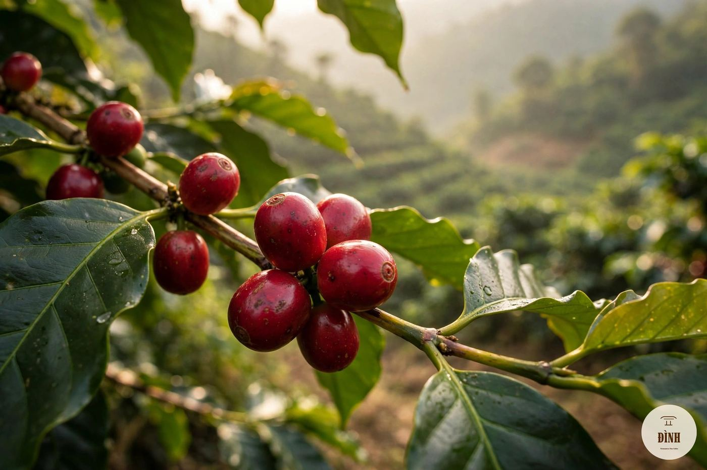
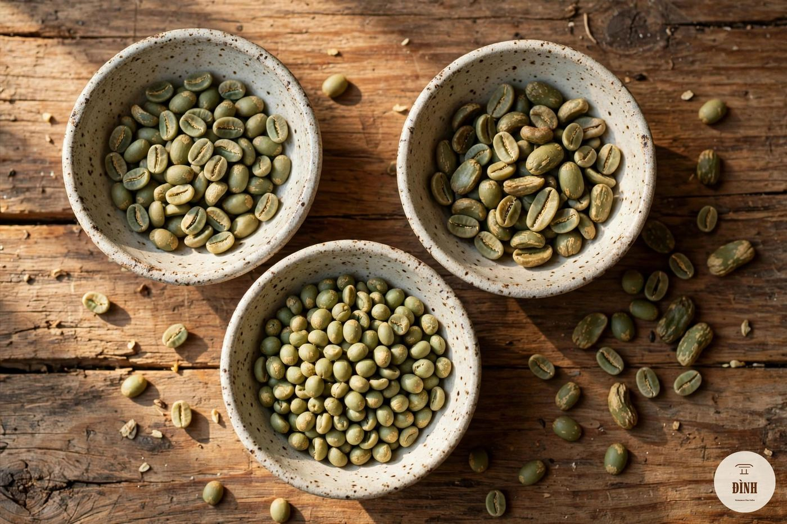
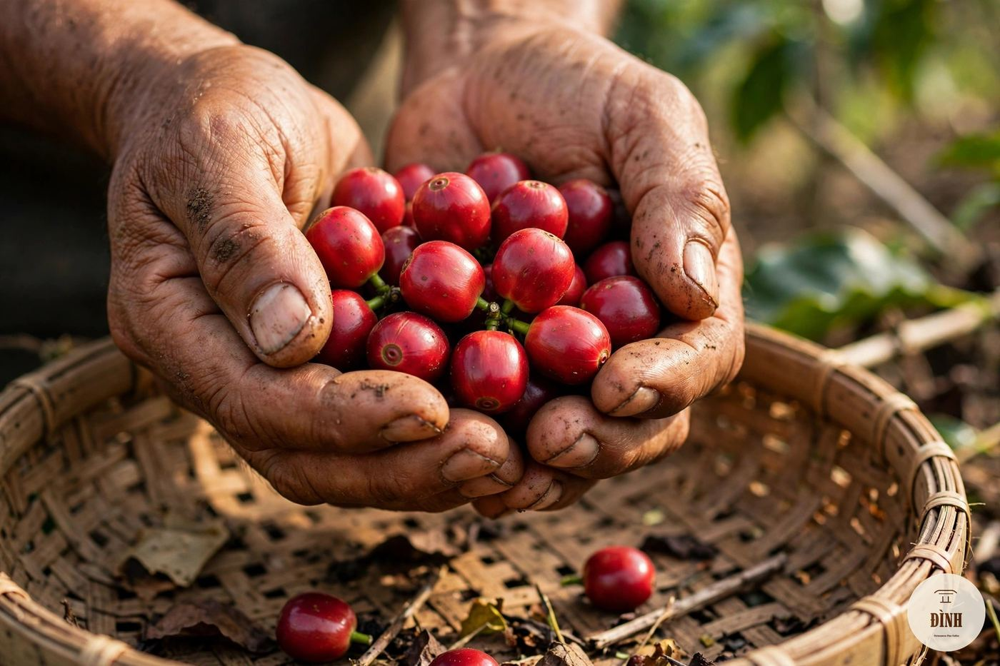
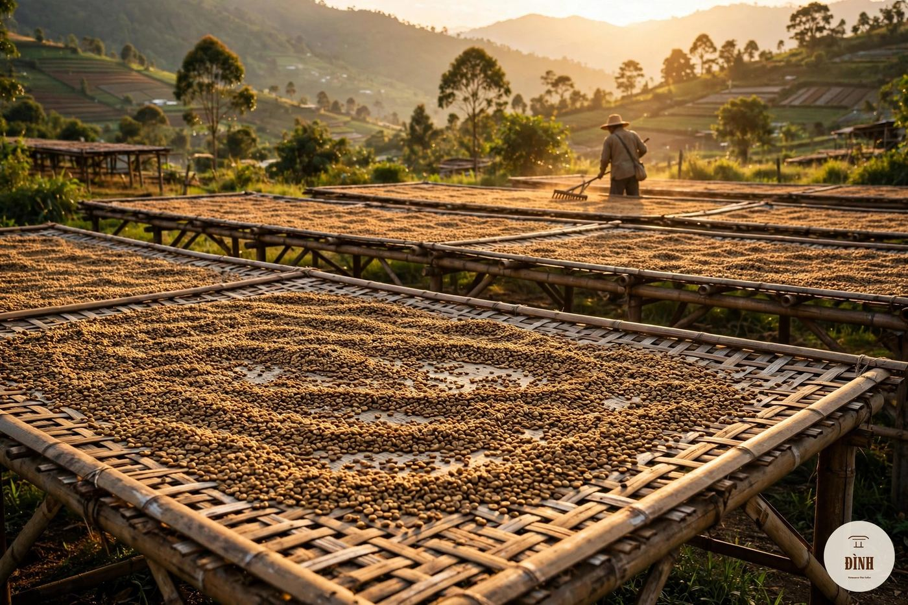
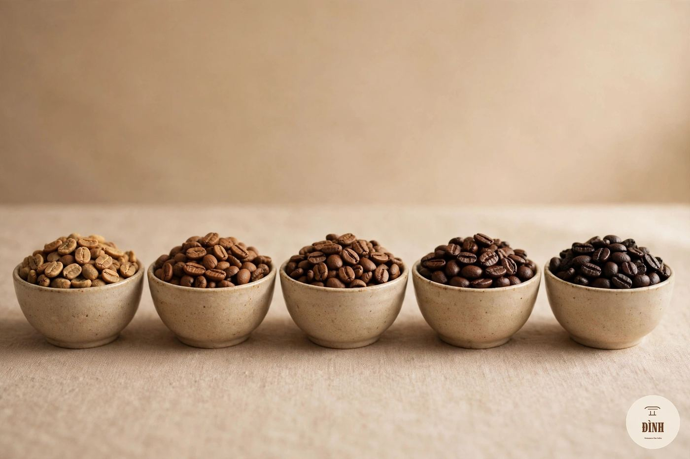
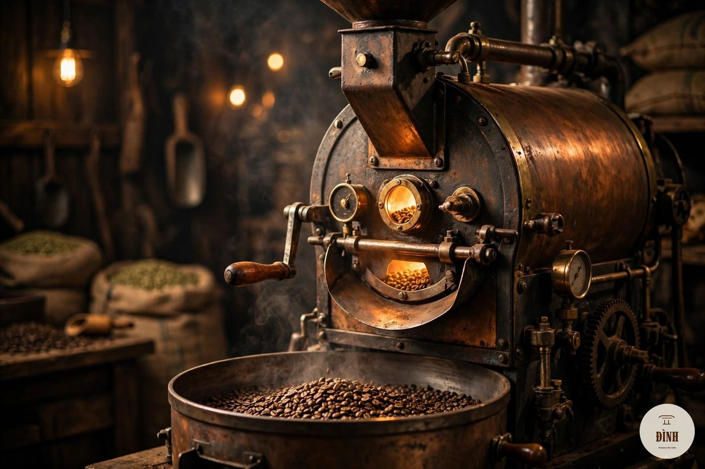
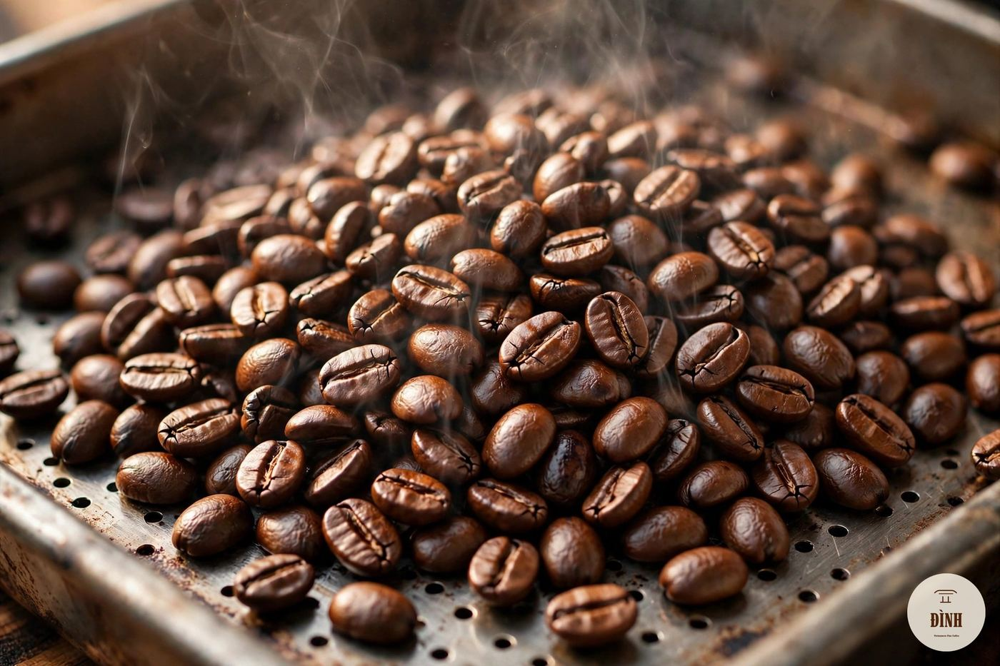
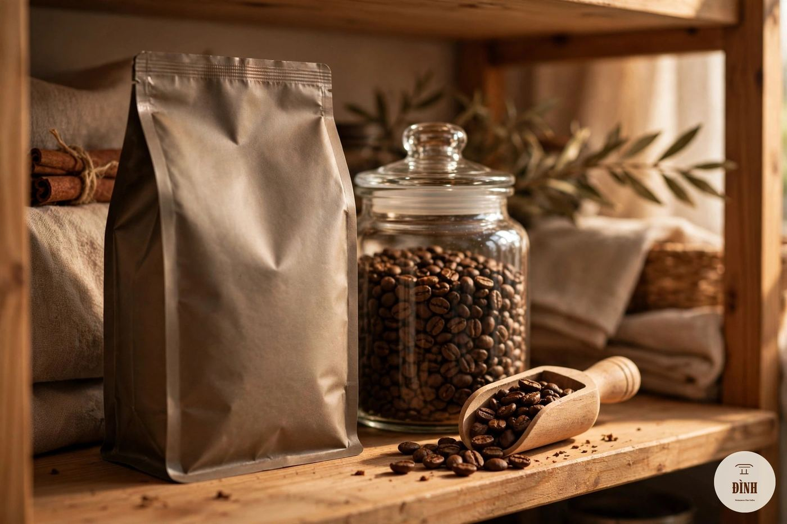
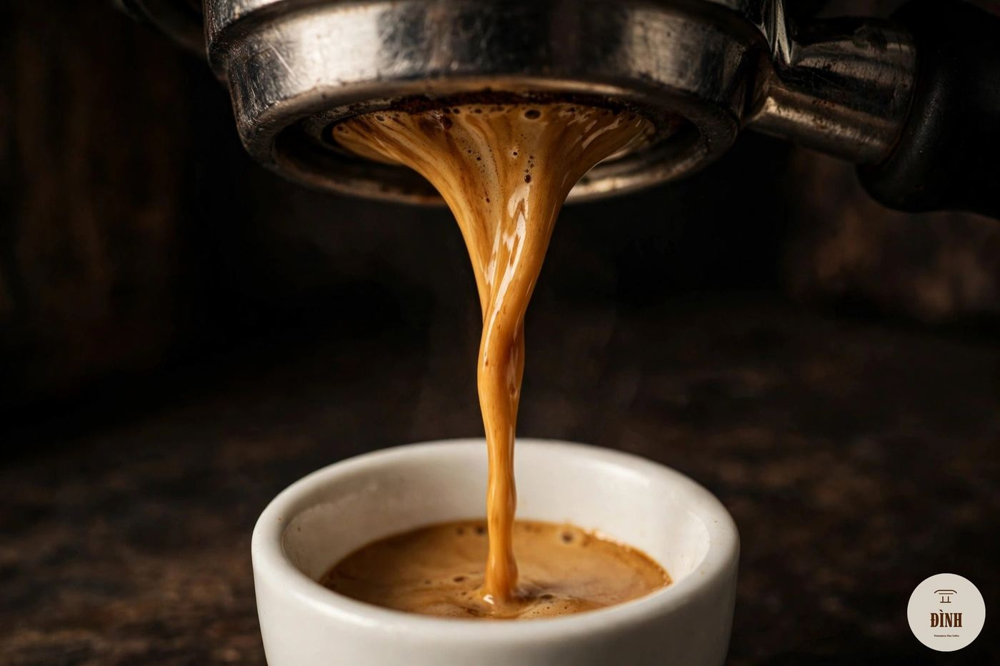
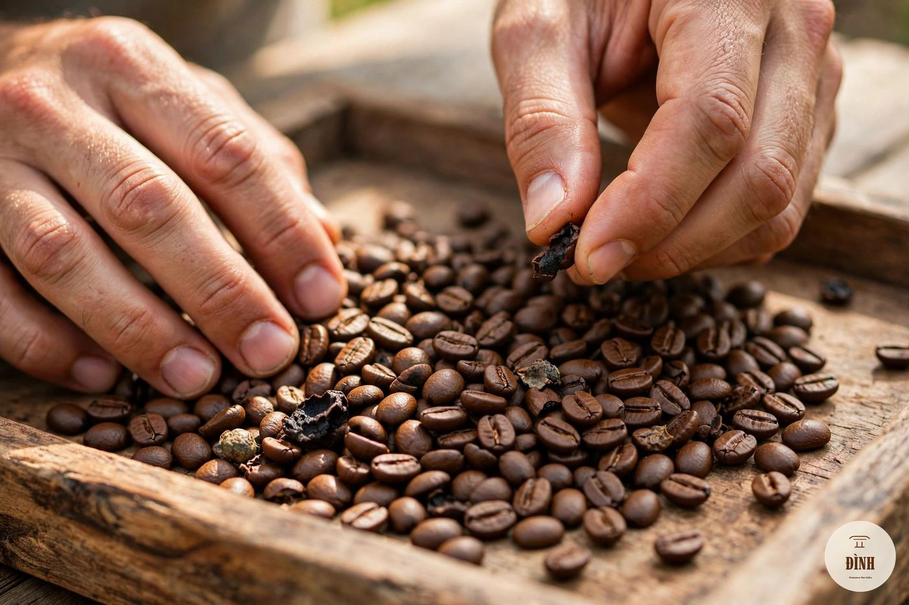

50 bài viết từ cơ bản đến nâng cao — những điều Đình học được sau nhiều năm đứng bếp rang, chia sẻ lại bằng ngôn ngữ đời thường nhất.

Mỗi tách cà phê đã đi qua hành trình cả năm trời — từ bông hoa trắng đến quả cherry chín đỏ.

Mỗi giống một tính cách, một gu riêng — không có giống nào "sang" hơn giống nào.

Robusta tuyển chọn, sơ chế tử tế có thể ngon không kém arabica — đây là cách phân biệt.

Cùng một mẻ cherry, ba cách sơ chế cho ra ba tách cà phê khác hẳn nhau.

Rang nhạt hay đậm không có đúng sai — chỉ có hợp gu và hợp cách pha hay không.

Người thợ rang nghe nhiều hơn nhìn — hai tiếng crack báo hiệu bước ngoặt trong hạt.

Độ đồng đều của bột quyết định chiết xuất — và chiết xuất quyết định tất cả.

Muốn pha ổn định mỗi sáng? Bắt đầu từ cái cân và tỷ lệ vàng của từng cách pha.

Nước dở thì hạt ngon mấy cũng uổng — khoáng chất và nhiệt độ quyết định rất nhiều.

Hạt mới rang đầy CO2 — pha ngay thì crema đẹp mà vị gắt. Hãy kiên nhẫn vài ngày.

Phương pháp chấm điểm chuẩn toàn cầu — và bạn hoàn toàn có thể tự làm tại nhà.

Đừng để tủ lạnh! Những nguyên tắc đơn giản để giữ cà phê tươi ngon lâu nhất.

25 giây quyết định tất cả — cách đọc vị và sửa ba lỗi phổ biến nhất.

Năm dấu hiệu nhận biết bằng mắt thường — để không uống phải hương liệu mỗi ngày.

Khi biết hạt cà phê từ vườn nào, tách cà phê có thêm một lớp hương vị: sự tin tưởng.

Nước càng sôi càng ngon là hiểu lầm phổ biến — ở 100 độ, nước "luộc" mất hương thơm trước khi bạn kịp uống.

Không cần máy móc cầu kỳ — chỉ cần cà phê xay thô, nước lọc và 12 tiếng kiên nhẫn là bạn có ly cold brew ngọt dịu, ít chua.

Chiếc phin nhỏ bé mà pha sai thì đắng gắt, pha đúng thì ngọt hậu. Từng bước để có ly phin ngon như ngoài quán.

25g cà phê, 30ml sữa đặc, đầy đá — công thức quốc dân. Nhưng để ly sữa đá ngon như quán ruột thì cần thêm vài bí quyết.

Robusta nhiều caffeine gấp đôi arabica. Hiểu rõ caffeine giúp bạn uống cà phê tỉnh táo mà không mất ngủ, không hồi hộp.

Bạc sỉu — "bạc tẩy xỉu phé" — ly cà phê mà sữa nhiều hơn cà phê, ngọt béo, nhẹ nhàng cho người mới bắt đầu.

Lòng đỏ trứng đánh bông với sữa đặc trên nền cà phê robusta đậm — món cà phê khiến du khách nước ngoài nhớ mãi Hà Nội.

Từ Huế lan ra cả nước — chỉ một nhúm muối nhỏ mà ly cà phê bớt đắng, thêm ngọt. Vì sao lại thế và pha thế nào?

Dụng cụ pha đơn giản nhất cho người mới: ngâm ủ 4 phút là có ly cà phê đậm đà, đầy đặn. Không cần kỹ thuật cầu kỳ.

Chiếc ấm nhôm hình bát giác của Bialetti — dùng áp suất hơi nước để cho ra ly cà phê đậm đặc gần như espresso, không cần máy tiền triệu.

Phễu V60 của Hario — dụng cụ pha cho người thích tinh chỉnh: mỗi vòng rót, mỗi nhịp thở đều in dấu lên hương vị.

Ống nhựa nhỏ gọn ra đời năm 2005, có cả giải vô địch thế giới riêng — pha nhanh, sạch, biến hóa vô cùng.

Xay quá mịn thì đắng, quá thô thì nhạt. Bảng tra cứu độ mịn cho từng dụng cụ và cách chỉnh khi ly cà phê chưa vừa ý.

Rót ít nước, đợi cà phê nở bung rồi mới pha tiếp — bước nhỏ 45 giây mà quyết định độ đều của cả ly cà phê.

Một loại thì kể câu chuyện một vùng đất, một loại thì cân bằng như bản hòa tấu. Hiểu để chọn đúng gu của mình.

Lớp bọt vàng nâu trên ly espresso không chỉ để đẹp — màu sắc, độ dày và độ bền của nó kể rất nhiều về cà phê và kỹ thuật pha.

Hạt cà phê xanh không mùi vị gì đặc biệt. Mọi hương thơm đều sinh ra từ hai phản ứng hóa học trong lò rang — hiểu chúng là hiểu nghề rang.

Lên men có kiểm soát tạo ra những ly cà phê đột phá; lên men mất kiểm soát tạo ra vị hỏng. Ranh giới ở đâu?

Hạt đen, hạt mốc, hạt sâu — chỉ vài hạt lỗi trong mẻ rang cũng đủ làm hỏng cả ly. Cách nhận biết và vì sao tuyển chọn kỹ quan trọng đến thế.

Cà phê trồng ở 1.500m khác gì trồng ở 600m? Câu chuyện về độ cao, khí hậu và vì sao Cầu Đất nổi tiếng.

Đằng sau chữ 'arabica' là cả một gia phả giống: kẻ hương thơm tuyệt đỉnh nhưng yếu ớt, người khỏe mạnh nhưng vị thường. Hiểu để chọn.

Cà phê cũng có mùa như trái cây. Biết mùa vụ giúp bạn mua được cà phê tươi mới nhất trong năm.

Khúc xạ kế, phần trăm chiết xuất, biểu đồ Brewing Control Chart — công cụ của dân chuyên nghiệp để biến 'ngon' thành con số.

Một vòng khuấy đúng lúc có thể cứu ly pour over khỏi chiết xuất không đều. Khoa học đằng sau động tác tưởng chừng đơn giản.

Bơm khí nitơ vào cold brew tạo lớp bọt mịn như bia tươi, vị kem béo mà không cần sữa — trải nghiệm lạ cho dân cà phê.

Mê hương cà phê nhưng tim đập nhanh, mất ngủ? Decaf loại bỏ 97% caffeine mà vẫn giữ được phần lớn hương vị.

Chất chống oxy hóa, tỉnh táo, hỗ trợ trao đổi chất — và những giới hạn cần tôn trọng. Nhìn nhận cân bằng về thức uống quốc dân.

Uống cà phê chiều mà đêm trằn trọc? Hiểu cơ chế caffeine và giấc ngủ để vừa tỉnh táo ban ngày, vừa ngủ ngon ban đêm.

Sữa tươi nguyên kem, ít béo, yến mạch, đậu nành — mỗi loại cho ra một ly latte khác hẳn. Hiểu để chọn đúng gu.

Trái tim, tulip, rosetta — không cần năng khiếu hội họa, chỉ cần sữa đúng chuẩn và vài buổi tập là bạn vẽ được.

Đá viên to hay nhỏ, cho đá trước hay sau — những chi tiết về đá quyết định ly cà phê đá của bạn ngon hay nhạt dần.

Dầu cà phê ôi thiu trong máy xay, cặn trong phin — thủ phạm thầm lặng khiến cà phê ngon thành dở. Lịch vệ sinh cho từng dụng cụ.

Không bloom, hương nhạt, vị giấy bìa — những dấu hiệu tố cáo cà phê đã quá 'thời vàng son' và cách xử lý gói cà phê cũ.

Chảo, nồi, máy rang mini — tự rang nghe thì thú vị nhưng đầy cạm bẫy: khói, cháy không đều, và sự thật về 'tươi nhất'.

Từ cây cà phê đầu tiên người Pháp trồng năm 1857 đến vị thế xuất khẩu thứ hai thế giới — và giấc mơ fine robusta hôm nay.